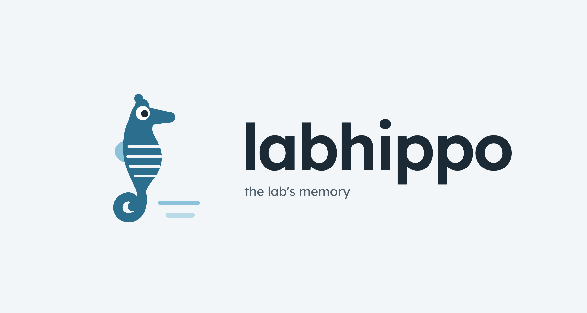
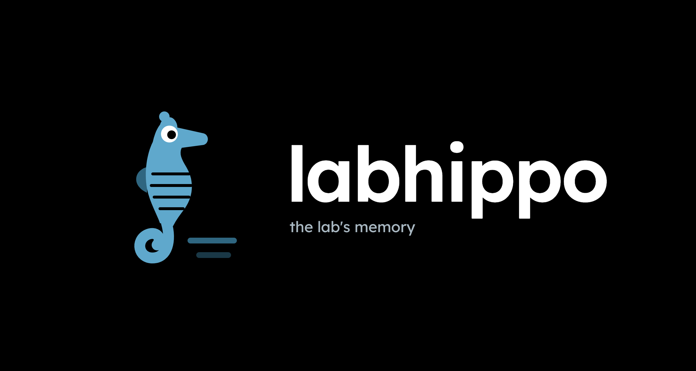

01
Capture
Turn lab activity into reviewed knowledge records.
Components
Read template details on GitHub ↗
Project · project event · resource · daily log templates
AI draft assistance + researcher review
LABHIPPO / ARCHITECTURE PLAN / 28 SEP 2026
The system at a glance
Capture research context in Markdown, structure it in a private repository, then publish reviewed views for the people who need them.

Scan this pageTurn lab activity into reviewed knowledge records.
Project · project event · resource · daily log templates
AI draft assistance + researcher review
Validate, version, connect, and trace each record.
Private GitHub Markdown repository
Schema checks · relationship and provenance index
Find knowledge by project, resource, role, or question.
Public GitHub Pages · approved fields only
Internal Azure Static Web Apps · authorized readers
Boundary: primary research data stay in their authoritative systems; only reviewed, permitted references and context enter LabHippo.
LABHIPPO / ARCHITECTURE PLAN / 28 SEP 2026
Layer 02 / Structure
A private GitHub repository will hold reviewed Markdown knowledge objects. Validation and indexing will turn folders into a traceable network without copying primary research data.

PRIVATE KNOWLEDGE SOURCE
labhippo-records/
├─ projects/project.md · events/
├─ resources/methods · software · guidance
├─ templates/shared and type-specific fields
└─ schemas/validation rules
BUILD FUNCTIONS
Required fields, stable IDs, links, source references, and publication classification.
Index each record by project, resource, method, workflow, person, status, and date.
Keep documentation commits distinct from dataset, pipeline, and external-system versions.
LabKey, ELN, XNAT, BIDS, and controlled storage remain authoritative for the underlying data. Participant-level identifiers enter LabHippo only when study governance permits them; they never enter the public build.
LABHIPPO / ARCHITECTURE PLAN / 28 SEP 2026
Layer 03 / Explore
The same private Markdown repository will generate separate publication outputs. Each site will have its own search index, links, assets, and access boundary.
Only explicitly approved records and fields would enter the existing public site after review.
Authorized lab readers would explore permitted internal records through role-oriented views.
DESIGN RULE
Views arrange information; authorization controls access to pages and assets. A public allowlist and review gate prevent internal records from entering the GitHub Pages build.
Read details in the GitHub Markdown file ↗Architecture proposal · templates, build pipeline, and Azure access rules are not deployed.